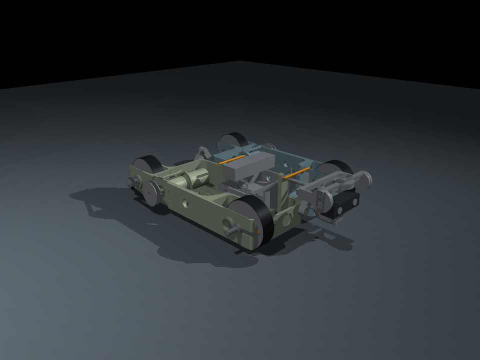
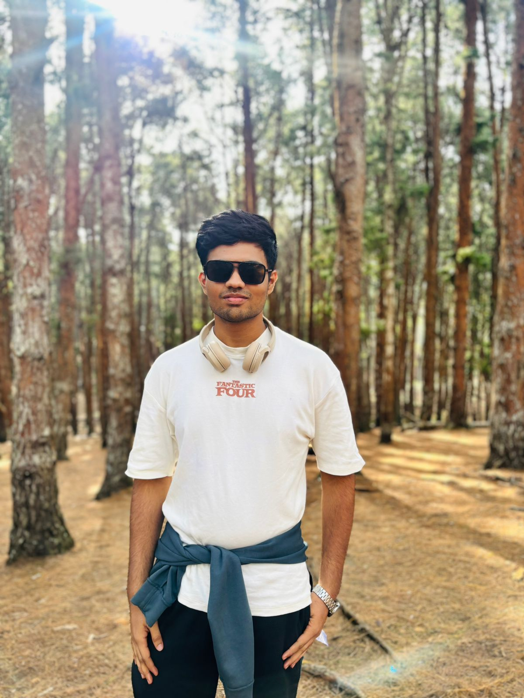
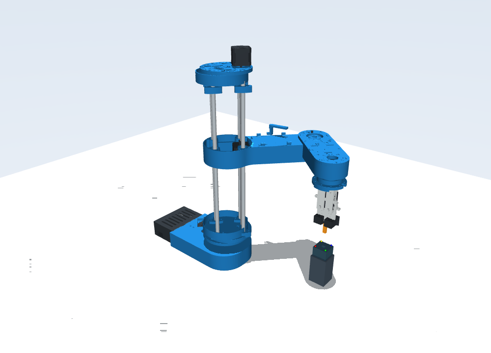

Project CLIMB: Autonomous Pipe Inspection Robot
Magnetic crawler combining ANSYS-validated adhesion, articulated mechanics, Gazebo physics and an inspection stack.
Open project page →Engineering Design student working across robotics, controls, embedded systems and autonomous systems—from multi-UAV simulation and formation control to inspection robots and sensorless manipulation.


Magnetic crawler combining ANSYS-validated adhesion, articulated mechanics, Gazebo physics and an inspection stack.
Open project page →
MuJoCo manipulation benchmark and motor-current-based contact estimation for force-sensor-free insertion.
Open project page →
6-DOF constrained formation / beam-pointing control with Crazyflie and OptiTrack hardware validation.
Open project page →
Reusable ROS 2 / Gazebo / ArduPilot fleet simulator with common DDS execution and planner benchmarking.
Open project page →Software Intern, Shunyaanantam (Feb 2026 to present)
Research, Multi-UAV Formation Control, Control Engineering Lab and Distributed Intelligence and Robotics Lab, IIT Madras (Aug 2026 to present)
Leadership
| Dual Degree, Engineering Design, IIT Madras | 2029 (expected) | CPI 9.32 |
| Class XII, Emerald International School | 2024 | 95.8% |
| Robotics and controls | ROS 2, Gazebo, MuJoCo, ArduPilot, PX4, A*, RRT*, PID, MPC, EKF, sensor fusion, multi-robot coordination |
|---|---|
| Embedded | STM32, Arduino, ESP32, PCB design, CAN, motor control, HIL |
| Software and ML | Python, C/C++, PyTorch, TensorFlow, OpenCV, TD3 |
| CAD and analysis | MATLAB/Simulink, Fusion 360, ANSYS FEA |
| Tools | Linux, Git, pytest, OptiTrack |